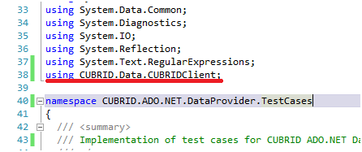

ADO.NET 드라이버
ADO.NET은 .NET 개발자에게 데이터 액세스 서비스를 제공하는 클래스 집합이다. ADO.NET은 분산된 데이터를 분산된 데이터 공유 응용 프로그램을 개발할 때 사용할 수 있는 다양한 구성 요소를 제공한다. 또한 관계형, XML 및 응용 프로그램 데이터에 대한 액세스를 제공하는 .NET Framework의 핵심 부분이다. ADO.NET은 응용 프로그램, 도구, 언어 또는 웹 브라우저에서 사용되는 중간 계층 비즈니스 개체 및 프런트 엔드 데이터베이스 클라이언트 개발을 비롯하여 다양한 개발 요구 사항을 지원한다.
ADO.NET 설치 및 설정
기본 환경
Windows(Windows Vista 또는 Windows 7 권장)
.NET 프레임워크 2.0 이상(4.0 이상 권장):
Microsoft Visual Studio Express edition( https://visualstudio.microsoft.com/ )
설치 및 설정
CUBRID를 사용하는 .NET 응용 프로그램을 개발하려면 CUBRID ADO.NET Data Provider(Cubrid.Data.dll)가 필요하다. CUBRID ADO.NET Data Provider를 설치하려면 다음 중 하나를 수행한다.
CUBRID ADO.NET Data Provider Installer를 다음 주소에서 다운로드하여 실행한다.
소스코드에서 직접 빌드한다. 소스코드는 GitHub에서 다운 받을 수 있습니다.
https://github.com/CUBRID/cubrid-adonet
CUBRID .NET Data Provider는 full-managed .NET 코드로 작성되어 CUBRID 라이브러리 파일에 의존하지 않는다. 따라서 CUBRID를 설치하거나 CUBRID 파일을 다운로드하지 않아도 CUBRID .NET Data Provider를 사용할 수 있다.
CUBRID ADO.NET Data Provider를 가장 간단하게 설치하는 방법은 CUBRID ADO.NET Data Provider Installer를 실행하는 것이다. 기본 설정(x86)으로 설치하면 Program Files\CUBRID\CUBRID ADO.NET Data Provider 8.4.1 디렉터리에 설치된다.
드라이버를 GAC( https://en.wikipedia.org/wiki/Global_Assembly_Cache )에 설치할 수도 있다. 드라이버를 GAC에 설치하는 가장 좋은 방법은 tlbimp( https://learn.microsoft.com/en-us/previous-versions/dotnet/netframework-2.0/tt0cf3sx(v=vs.80) )를 사용하는 것이다. 필요한 네임스페이스는 다음과 같이 import한다.

ADO.NET 프로그래밍
CUBRID ADO.NET API 문서는 http://ftp.cubrid.org/CUBRID_Docs/Drivers/ADO.NET/를 참고한다.
단순 질의/조회
CUBRID 데이터베이스의 테이블에서 값을 조회하는 간단한 코드를 살펴보자. 연결은 이미 생성되었다고 가정한다.
String sql = "select * from nation order by `code` asc";
using (CUBRIDCommand cmd = new CUBRIDCommand(sql, conn))
{
using (DbDataReader reader = cmd.ExecuteReader())
{
reader.Read();
//(read the values using: reader.Get...() methods)
}
}
위와 같이 DbDataReader 객체를 생성한 후에는 Get…() 메서드를 사용하여 칼럼 데이터를 조회할 수 있다. CUBRID ADO.NET 드라이버는 다음과 같이 CUBRID의 모든 데이터 타입을 읽는 데 필요한 모든 메서드를 제공한다.
reader.GetString(3)
reader.GetDecimal(1)
Get…() 메서드의 파라미터로 0부터 시작하는 숫자를 입력하여 칼럼에서 조회할 칼럼 데이터의 인덱스 위치를 지정한다.
특정 CUBRID 데이터 타입의 데이터를 조회하려면 DbDataReader 인터페이스 대신 다음과 같이 CUBRIDDataReader를 사용해야 한다.
using (CUBRIDCommand cmd = new CUBRIDCommand("select * from t", conn))
{
CUBRIDDataReader reader = (CUBRIDDataReader)cmd.ExecuteReader();
reader.Read();
Debug.Assert(reader.GetDateTime(0) == new DateTime(2008, 10, 31, 10, 20, 30, 040));
Debug.Assert(reader.GetDate(0) == "2008-10-31");
Debug.Assert(reader.GetDate(0, "yy/MM/dd") == "08-10-31");
Debug.Assert(reader.GetTime(0) == "10:20:30");
Debug.Assert(reader.GetTime(0, "HH") == "10");
Debug.Assert(reader.GetTimestamp(0) == "2008-10-31 10:20:30.040");
Debug.Assert(reader.GetTimestamp(0, "yyyy HH") == "2008 10");
}
batch 명령어
CUBRID ADO.NET Data Provider를 사용하면 하나의 batch에서 데이터 서비스에 하나 이상의 질의를 실행할 수 있다. batch에 대한 자세한 내용은 https://learn.microsoft.com/en-us/previous-versions/dd744839(v=vs.90)를 참고한다.
예를 들면 다음과 같은 코드를 작성할 수 있다.
string[] sql_arr = new string[3];
sql_arr0 = "insert into t values(1)";
sql_arr1 = "insert into t values(2)";
sql_arr2 = "insert into t values(3)";
conn.BatchExecute(sql_arr);
위 코드는 다음과 같이 작성할 수도 있다.
string[] sqls = newstring3;
sqls0 = "create table t(id int)";
sqls1 = "insert into t values(1)";
sqls2 = "insert into t values(2)";
conn.BatchExecuteNoQuery(sqls);
연결 문자열
.NET 응용 프로그램에서 CUBRID 연결을 생성하려면 다음과 같은 형식의 연결 문자열을 생성해야 한다.
ConnectionString = "server=<server address>;database=<database name>;port=<port number to use for connection to broker>;user=<user name>;password=<user password>;"
port를 제외한 모든 파라미터는 반드시 값을 입력해야 한다. port 값을 입력하지 않았을 때의 기본값은 30000 이다.
연결 옵션에 따른 연결 문자열의 예는 다음과 같다.
로컬 서버의 demodb 데이터베이스에 연결하는 연결 문자열은 다음과 같다.
ConnectionString = "server=127.0.0.1;database=demodb;port=30000;user=public;password="원격 서버의 demodb 데이터베이스에 dba 사용자로 연결하는 문자열은 다음과 같다.
ConnectionString = "server=10.50.88.1;database=demodb;user=dba;password="원격 서버의 demodb 데이터베이스에 dba 사용자, 비밀번호는 secret 으로 연결하는 문자열은 다음과 같다.
ConnectionString = "server=10.50.99.1;database=demodb;port=30000;user=dba;password=secret"
연결 문자열은 CUBRIDConnectionStringBuilder 클래스를 사용하여 다음과 같이 생성할 수도 있다.
CUBRIDConnectionStringBuilder sb = new CUBRIDConnectionStringBuilder(localhost,"33000","demodb","public","");
using (CUBRIDConnection conn = new CUBRIDConnection(sb.GetConnectionString()))
{
conn.Open();
}
위 코드와 같은 동작을 수행하는 코드를 다음과 같이 작성할 수도 있다.
sb = new CUBRIDConnectionStringBuilder();
sb.User = "public" ;
sb.Database = "demodb";
sb.Port = "33000";
sb.Server = "localhost";
using (CUBRIDConnection conn = new CUBRIDConnection(sb.GetConnectionString()))
{
conn.Open();
}
참고
스레드 기반 프로그램에서 데이터베이스 연결은 각 스레드마다 독립적으로 사용해야 한다.
CUBRID 컬렉션
컬렉션은 CUBRID에서 사용하는 데이터 타입이다. 컬렉션 타입에 대한 자세한 내용은 컬렉션 데이터 타입 을 참고한다. 컬렉션 타입은 다른 데이터베이스에서 흔히 사용하지 않으므로, 이 타입을 사용하려면 다음과 같은 CUBRID 컬렉션 메서드를 사용해야 한다.
public void AddElementToSet(CUBRIDOid oid, String attributeName, Object value)
public void DropElementInSet(CUBRIDOid oid, String attributeName, Object value)
public void UpdateElementInSequence(CUBRIDOid oid, String attributeName, int index, Object value)
public void InsertElementInSequence(CUBRIDOid oid, String attributeName, int index, Object value)
public void DropElementInSequence(CUBRIDOid oid, String attributeName, int index)
public int GetCollectionSize(CUBRIDOid oid, String attributeName)
다음은 컬렉션 타입에서 값을 읽는 코드의 예이다.
using (CUBRIDCommand cmd = new CUBRIDCommand("SELECT * FROM t", conn))
{
using (DbDataReader reader = cmd.ExecuteReader())
{
while (reader.Read())
{
object[] o = (object[])reader[0];
for (int i = 0; i <SeqSize; i++)
{
//...
}
}
}
}
다음은 컬렉션 타입을 갱신하는 코드의 예이다.
conn.InsertElementInSequence(oid, attributeName, 5, value);
SeqSize = conn.GetCollectionSize(oid, attributeName);
using (CUBRIDCommand cmd = new CUBRIDCommand("SELECT * FROM t", conn))
{
using (DbDataReader reader = cmd.ExecuteReader())
{
while (reader.Read())
{
int[] expected = { 7, 1, 2, 3, 7, 4, 5, 6 };
object[] o = (object[])reader[0];
}
}
}
conn.DropElementInSequence(oid, attributeName, 5);
SeqSize = conn.GetCollectionSize(oid, attributeName);
BLOB/CLOB 사용
CUBRID 2008 R4.0(8.4.0) 이상 버전에서는 GLO 데이터 타입을 더 이상 사용하지 않고 BLOB, CLOB와 같은 LOB 데이터 타입을 사용한다. 이 데이터 타입은 다른 데이터베이스에서 흔히 사용하지 않으므로, 이 타입을 사용하려면 CUBRID ADO.NET Data Provider가 제공하는 메서드를 사용해야 한다.
다음은 BLOB 데이터를 읽는 코드의 예이다.
CUBRIDCommand cmd = new CUBRIDCommand(sql, conn);
DbDataReader reader = cmd.ExecuteReader();
while (reader.Read())
{
CUBRIDBlob bImage = (CUBRIDBlob)reader[0];
byte[] bytes = new byte[(int)bImage.BlobLength];
bytes = bImage.getBytes(1, (int)bImage.BlobLength);
//...
}
다음은 CLOB 데이터를 갱신하는 코드의 예이다.
string sql = "UPDATE t SET c = ?";
CUBRIDCommand cmd = new CUBRIDCommand(sql, conn);
CUBRIDClob clob = new CUBRIDClob(conn);
str = conn.ConnectionString; //Use the ConnectionString for testing
clob.SetString(1, str);
CUBRIDParameter param = new CUBRIDParameter();
param.ParameterName = "?";
param.CUBRIDDataType = CUBRIDDataType.CCI_U_TYPE_CLOB;
param.Value = clob;
cmd.Parameters.Add(param);
cmd.ExecuteNonQuery();
CUBRID 메타데이터 지원
CUBRID ADO.NET Data Provider는 데이터베이스 메타데이터를 지원하는 메서드를 제공한다. 메타데이터를 지원하는 메서드는 CUBRIDSchemaProvider 클래스에 구현되어 있다.
public DataTable GetDatabases(string[] filters)
public DataTable GetTables(string[] filters)
public DataTable GetViews(string[] filters)
public DataTable GetColumns(string[] filters)
public DataTable GetIndexes(string[] filters)
public DataTable GetIndexColumns(string[] filters)
public DataTable GetExportedKeys(string[] filters)
public DataTable GetCrossReferenceKeys(string[] filters)
public DataTable GetForeignKeys(string[] filters)
public DataTable GetUsers(string[] filters)
public DataTable GetProcedures(string[] filters)
public static DataTable GetDataTypes()
public static DataTable GetReservedWords()
public static String[] GetNumericFunctions()
public static String[] GetStringFunctions()
public DataTable GetSchema(string collection, string[] filters)
다음은 데이터베이스에서 테이블의 목록을 얻는 코드의 예이다.
CUBRIDSchemaProvider schema = new CUBRIDSchemaProvider(conn);
DataTable dt = schema.GetTables(new string[] { "%" });
Debug.Assert(dt.Columns.Count == 3);
Debug.Assert(dt.Rows.Count == 10);
Debug.Assert(dt.Rows[0].ToString() == "demodb");
Debug.Assert(dt.Rows[1].ToString() == "demodb");
Debug.Assert(dt.Rows[2].ToString() == "stadium");
Get the list of Foreign Keys in a table:
CUBRIDSchemaProvider schema = new CUBRIDSchemaProvider(conn);
DataTable dt = schema.GetForeignKeys(new string[] { "game" });
Debug.Assert(dt.Columns.Count == 9);
Debug.Assert(dt.Rows.Count == 2);
Debug.Assert(dt.Rows[0].ToString() == "athlete");
Debug.Assert(dt.Rows[1].ToString() == "code");
Debug.Assert(dt.Rows[2].ToString() == "game");
Debug.Assert(dt.Rows[3].ToString() == "athlete_code");
Debug.Assert(dt.Rows[4].ToString() == "1");
Debug.Assert(dt.Rows[5].ToString() == "1");
Debug.Assert(dt.Rows[6].ToString() == "1");
Debug.Assert(dt.Rows[7].ToString() == "fk_game_athlete_code");
Debug.Assert(dt.Rows[8].ToString() == "pk_athlete_code");
다음은 테이블의 인덱스 목록을 얻는 코드의 예이다.
CUBRIDSchemaProvider schema = new CUBRIDSchemaProvider(conn);
DataTable dt = schema.GetIndexes(new string[] { "game" });
Debug.Assert(dt.Columns.Count == 9);
Debug.Assert(dt.Rows.Count == 5);
Debug.Assert(dt.Rows32.ToString() == "pk_game_host_year_event_code_athlete_code"); //Index name
Debug.Assert(dt.Rows34.ToString() == "True"); //Is it a PK?
DataTable 지원
DataTable 은 ADO.NET에서 가장 중심이 되는 객체로, CUBRID ADO.NET Data Provider는 다음과 같은 기능을 지원한다.
칼럼 속성을 얻는 코드의 예는 다음과 같다.
String sql = "select * from nation";
CUBRIDDataAdapter da = new CUBRIDDataAdapter();
da.SelectCommand = new CUBRIDCommand(sql, conn);
DataTable dt = new DataTable("nation");
da.FillSchema(dt, SchemaType.Source);//To retrieve all the column properties you have to use the FillSchema() method
Debug.Assert(dt.Columns[0].ColumnName == "code");
Debug.Assert(dt.Columns[0].AllowDBNull == false);
Debug.Assert(dt.Columns[0].DefaultValue.ToString() == "");
Debug.Assert(dt.Columns[0].Unique == true);
Debug.Assert(dt.Columns[0].DataType == typeof(System.String));
Debug.Assert(dt.Columns[0].Ordinal == 0);
Debug.Assert(dt.Columns[0].Table == dt);
INSERT 문 지원 기능을 이용하여 테이블에 값을 삽입하는 코드의 예는 다음과 같다.
String sql = " select * from nation order by `code` asc";
using (CUBRIDDataAdapter da = new CUBRIDDataAdapter(sql, conn))
{
using (CUBRIDDataAdapter daCmd = new CUBRIDDataAdapter(sql, conn))
{
CUBRIDCommandBuildercmdBuilder = new CUBRIDCommandBuilder(daCmd);
da.InsertCommand = cmdBuilder.GetInsertCommand();
}
DataTable dt = new DataTable("nation");
da.Fill(dt);
DataRow newRow = dt.NewRow();
newRow["code"] = "ZZZ";
newRow["name"] = "ABCDEF";
newRow["capital"] = "MyXYZ";
newRow["continent"] = "QWERTY";
dt.Rows.Add(newRow);
da.Update(dt);
}
트랜잭션
CUBRID ADO.NET Data Provider는 직접 SQL 트랜잭션(direct-SQL transaction)과 비슷한 방법으로 트랜잭션 지원을 구현한다. 다음은 트랜잭션을 사용하는 코드의 예이다.
conn.BeginTransaction();
string sql = "create table t(idx integer)";
using (CUBRIDCommand command = new CUBRIDCommand(sql, conn))
{
command.ExecuteNonQuery();
}
conn.Rollback();
conn.BeginTransaction();
sql = "create table t(idx integer)";
using (CUBRIDCommand command = new CUBRIDCommand(sql, conn))
{
command.ExecuteNonQuery();
}
conn.Commit();
파라미터 사용
CUBRID에서는 위치 기반 파라미터만 지원하며 명명된 파라미터는 지원하지 않으므로, CUBRID ADO.NET Data Provider는 위치 기반 파라미터 지원을 구현한다. 파라미터 이름은 자유롭게 사용할 수 있으며 파라미터 이름 앞에는 물음표 기호를 붙여야 한다. 파라미터를 선언하고 초기화할 때 반드시 파라미터의 순서를 지켜야 한다.
다음은 파라미터를 사용하여 SQL문을 실행하는 코드의 예이다. 다음 코드에서 중요한 것은 Add () 메서드가 호출되는 순서이다.
using (CUBRIDCommand cmd = new CUBRIDCommand("insert into t values(?, ?)", conn))
{
CUBRIDParameter p1 = new CUBRIDParameter("?p1", CUBRIDDataType.CCI_U_TYPE_INT);
p1.Value = 1;
cmd.Parameters.Add(p1);
CUBRIDParameter p2 = new CUBRIDParameter("?p2", CUBRIDDataType.CCI_U_TYPE_STRING);
p2.Value = "abc";
cmd.Parameters.Add(p2);
cmd.ExecuteNonQuery();
}
오류 코드 및 메시지
다음은 CUBRID ADO.NET Data Provider를 사용하면서 오류가 발생할 때 나타나는 오류이다.
오류 코드 번호 |
오류 코드 |
오류 메시지 |
|---|---|---|
0 |
ER_NO_ERROR |
“No Error” |
1 |
ER_NOT_OBJECT |
“Index’s Column is Not Object” |
2 |
ER_DBMS |
“Server error” |
3 |
ER_COMMUNICATION |
“Cannot communicate with the broker” |
4 |
ER_NO_MORE_DATA |
“Invalid dataReader position” |
5 |
ER_TYPE_CONVERSION |
“DataType conversion error” |
6 |
ER_BIND_INDEX |
“Missing or invalid position of the bind variable provided” |
7 |
ER_NOT_BIND |
“Attempt to execute the query when not all the parameters are binded” |
8 |
ER_WAS_NULL |
“Internal Error: NULL value” |
9 |
ER_COLUMN_INDEX |
“Column index is out of range” |
10 |
ER_TRUNCATE |
“Data is truncated because receive buffer is too small” |
11 |
ER_SCHEMA_TYPE |
“Internal error: Illegal schema paramCUBRIDDataType” |
12 |
ER_FILE |
“File access failed” |
13 |
ER_CONNECTION |
“Cannot connect to a broker” |
14 |
ER_ISO_TYPE |
“Unknown transaction isolation level” |
15 |
ER_ILLEGAL_REQUEST |
“Internal error: The requested information is not available” |
16 |
ER_INVALID_ARGUMENT |
“The argument is invalid” |
17 |
ER_IS_CLOSED |
“Connection or Statement might be closed” |
18 |
ER_ILLEGAL_FLAG |
“Internal error: Invalid argument” |
19 |
ER_ILLEGAL_DATA_SIZE |
“Cannot communicate with the broker or received invalid packet” |
20 |
ER_NO_MORE_RESULT |
“No More Result” |
21 |
ER_OID_IS_NOT_INCLUDED |
“This ResultSet do not include the OID” |
22 |
ER_CMD_IS_NOT_INSERT |
“Command is not insert” |
23 |
ER_UNKNOWN |
“Error” |